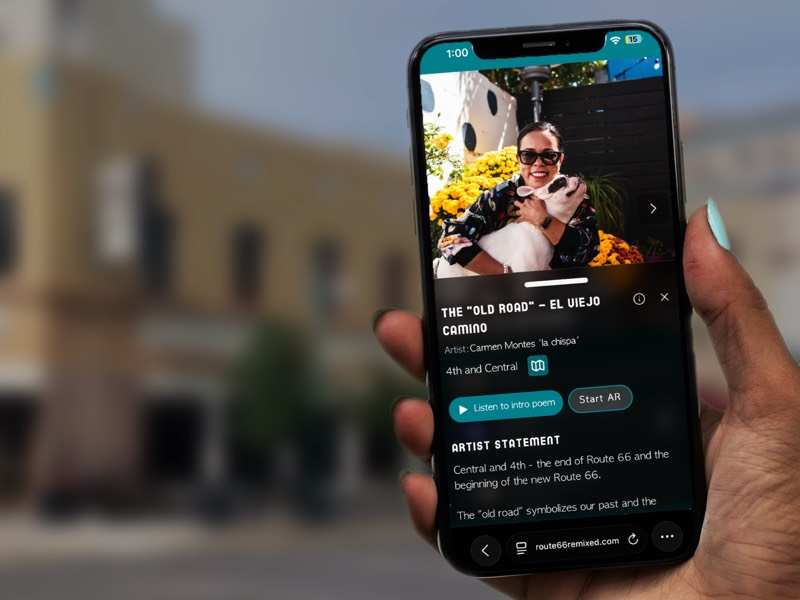
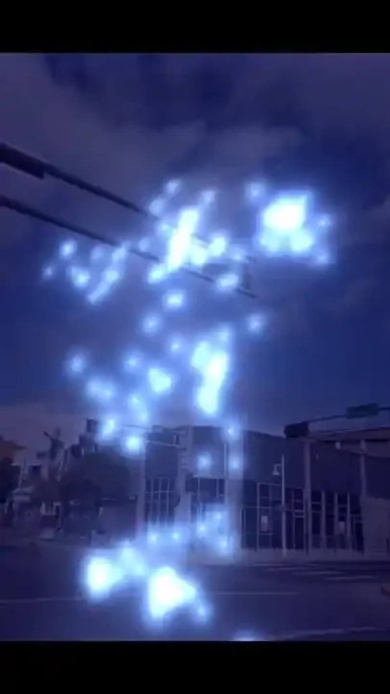
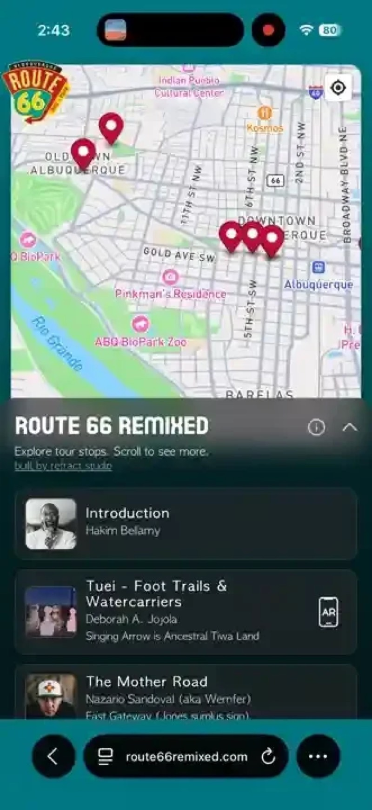

An art-fueled road trip down Albuquerque's historic Route 66
In 2025, Refract Studio partnered with the City of Albuquerque on Route 66 Remixed, an 18-mile public art experience for the city's Route 66 Centennial. Down Central Avenue it mixed murals, sculpture, poetry, sound, and browser-based AR from more than 20 New Mexico artists.
I was the lead engineer and tech lead. I designed the architecture for the AR pieces and the project website, which works on any smartphone with no app, and led the teams that built them.
The artists included Deb Jojola, Helen Juliet Atkins, Jessica Helen Lopez, Sonja Killer, Karl Orozco, Akilah Martinez, Lynnette Haozous, Jesse Littlebird, PAZ, and many others. Their work ranged from Indigenous futurism and migration to lowrider culture, ecology, poetry, film history, and roadside Americana.


